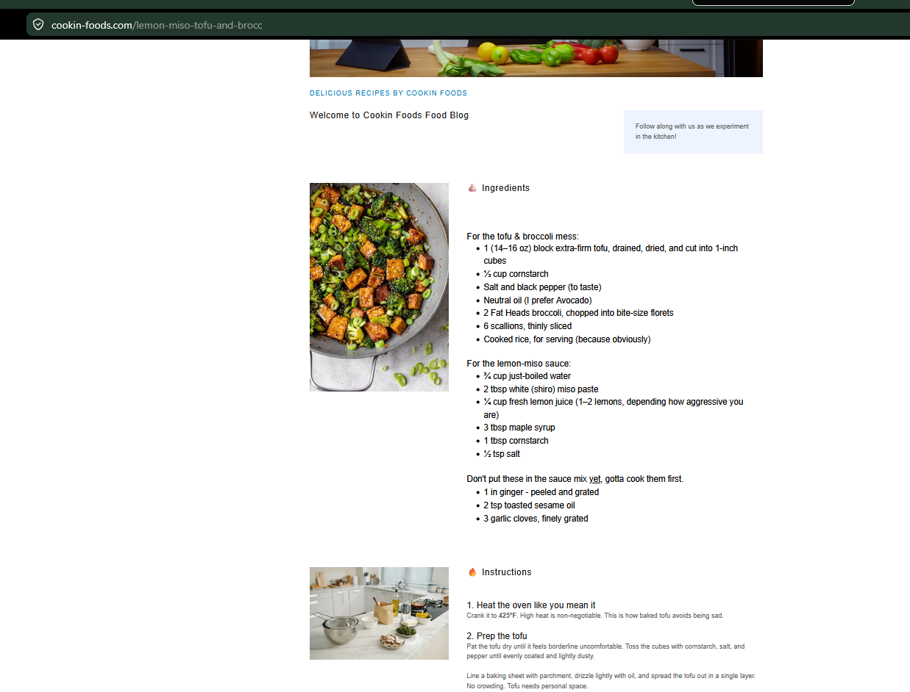

Lemon Miso Tofu and Broccoli
Crispy baked tofu and charred broccoli in a lemon-miso sauce over rice.
Ingredients
Tofu and Broccoli
- 1 block extra-firm tofu, drained, dried, and cut into 1-inch cubes
- ⅓ cup cornstarch
- Salt and black pepper
- Neutral oil
- 2 heads broccoli, chopped
- 6 scallions, thinly sliced
- Cooked rice
Lemon-Miso Sauce
- ¾ cup just-boiled water
- 2 tbsp white miso paste
- ¼ cup fresh lemon juice
- 3 tbsp maple syrup
- 1 tbsp cornstarch
- ½ tsp salt
Finishers
- 1-inch piece ginger, peeled and grated
- 2 tsp toasted sesame oil
- 3 garlic cloves, finely grated
Instructions
Heat oven
Preheat oven to 425°F. High heat helps the tofu crisp instead of steaming.
Prep tofu
Pat tofu dry until it feels almost uncomfortably dry. Toss tofu cubes with cornstarch, salt, pepper, and enough oil to coat lightly.
Bake tofu
Line a baking sheet with parchment, drizzle lightly with oil, and spread tofu in a single layer with space between pieces. Bake 20–25 minutes, flipping once, until golden and crisp on the edges.
Char broccoli
Heat oil in a pan over medium-high heat. Add broccoli, season with salt and pepper, and cook until it has browned, charred edges. Transfer to a plate.
Make sauce
Whisk just-boiled water, miso, lemon juice, maple syrup, cornstarch, and salt until smooth.
Finish aromatics and sauce
Wipe out the skillet if needed. Add sesame oil, garlic, and ginger and cook about 30 seconds, until fragrant. Pour in sauce and simmer until thick, glossy, and clear, about 3–4 minutes.
Combine and serve
Add baked tofu and broccoli to the sauce and toss gently until coated. Serve immediately over rice with scallions on top.
Notes
- If tofu is not crisp, bake it longer.
- If broccoli is not charred, it was too gentle.
- If the sauce gets too thick, splash in hot water.